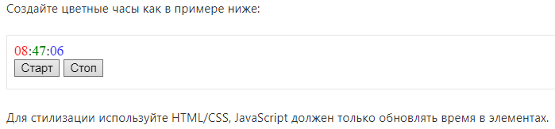

Task 1. Очистите элемент. Создайте функцию clear(elem), которая удаляет всё содержимое из elem.
Task 2. Создайте список
Напишите интерфейс для создания списка.
Для каждого пункта:
Запрашивайте содержимое пункта у пользователя с помощью prompt.
Создавайте элемент li и добавляйте его к ul.
Процесс прерывается, когда пользователь нажимает Esc или вводит пустую строку.
Все элементы должны создаваться динамически.
Если пользователь вводит HTML-теги -– пусть в списке они показываются как обычный текст.
Task 3. Создайте дерево из объекта. Напишите функцию createTree, которая создаёт вложенный список ul/li из объекта.
Выберите один из двух способов решения этой задачи:
Создать строку, а затем присвоить через container.innerHTML.
Создавать узлы через методы DOM.
Если получится – сделайте оба.
P.S. Желательно, чтобы в дереве не было лишних элементов, в частности -– пустых ul на нижнем уровне.
Task 4. Выведите список потомков в дереве
Есть дерево, организованное в виде вложенных списков ul/li.
Напишите код, который добавит каждому элементу списка li количество вложенных в него элементов. Узлы нижнего уровня, без детей – пропускайте.
Task 5. Создайте календарь в виде таблицы
Напишите функцию createCalendar(elem, year, month).
Вызов функции должен создать календарь для заданного месяца month в году year и вставить его в elem.
Календарь должен быть таблицей, где неделя – это
Task 6. Цветные часы с использованием setInterval
